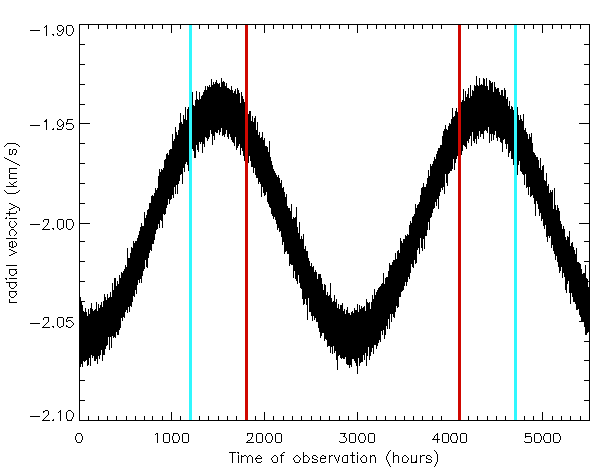

Forrige side🙂 🙁Tips til parameterestimering
Vi kan nå gjøre helt det samme for perioden P. Er du enig i at perioden (avstanden fra topp til topp) ihvertfall må være større enn avstanden mellom de røde linjene, og ihvertfall mindre enn avstanden mellom de blå linjene. Da har du en minste periode og en største periode som du kan lage f.eks. 20 mulige verdier mellom, akkurat som for t0. Og til slutt gjør du det samme for v*. Da har du til slutt 203 mulige kombinasjoner.
